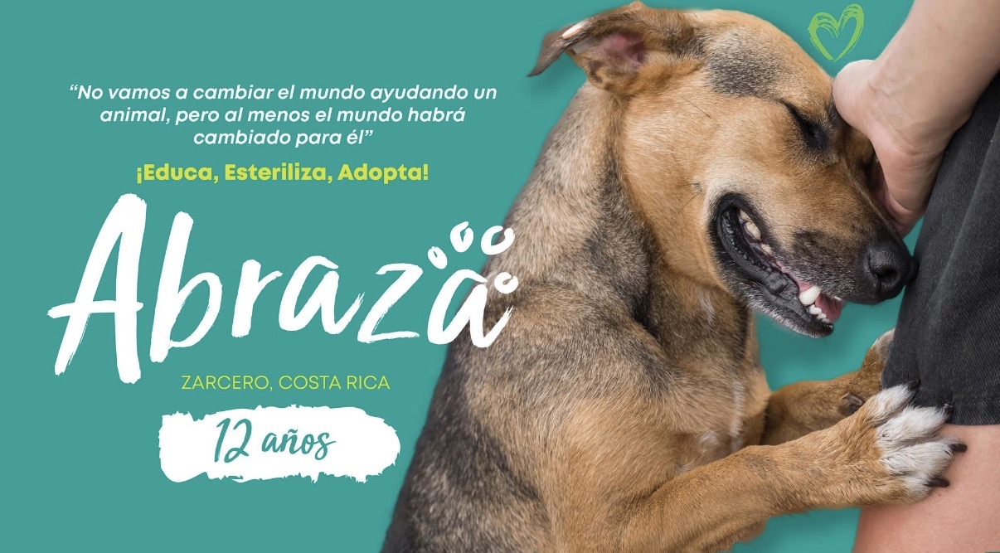
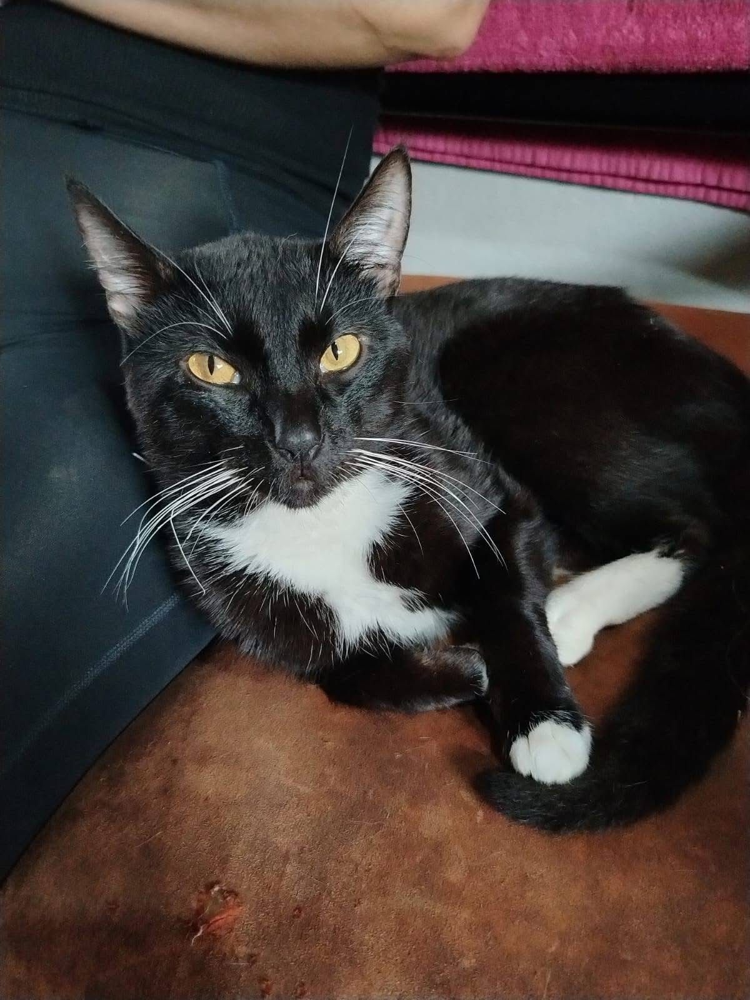
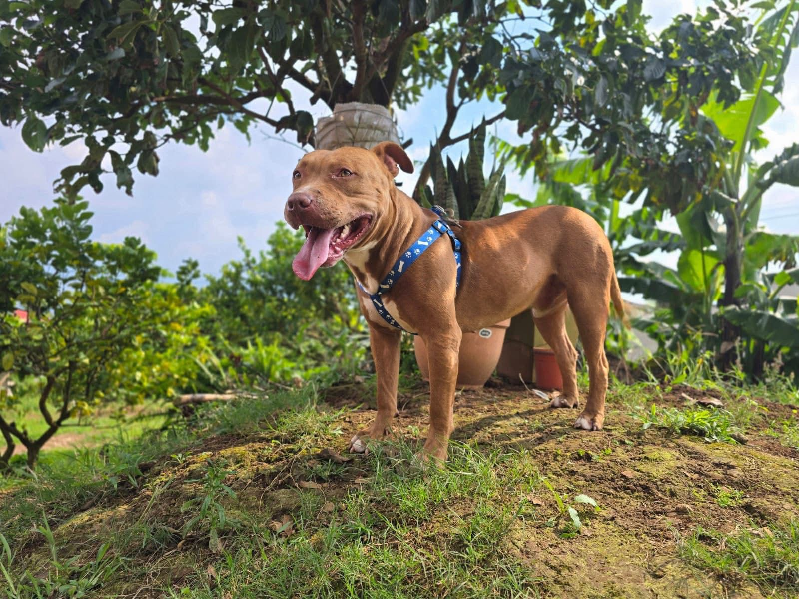
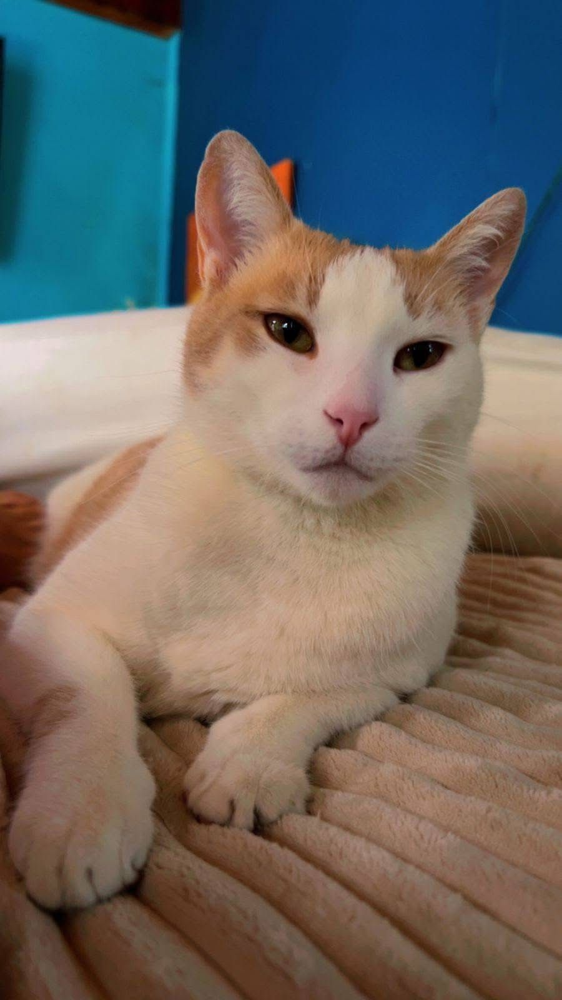
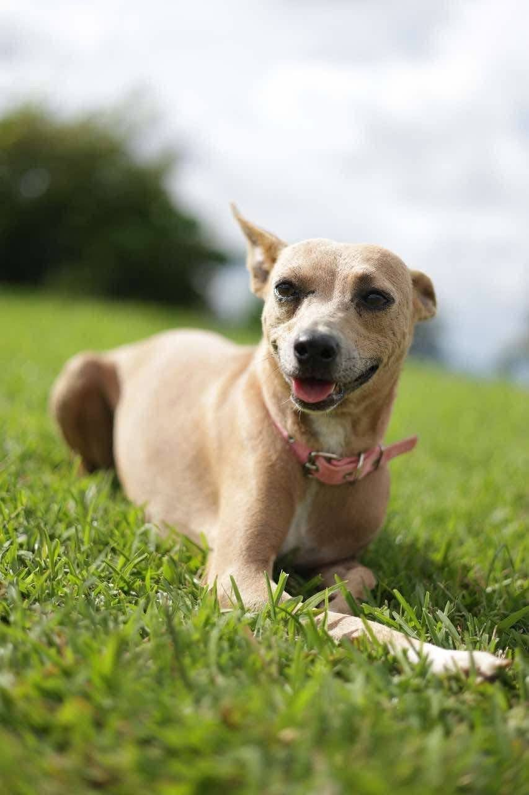
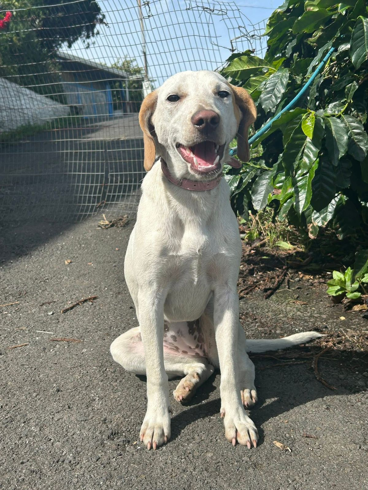
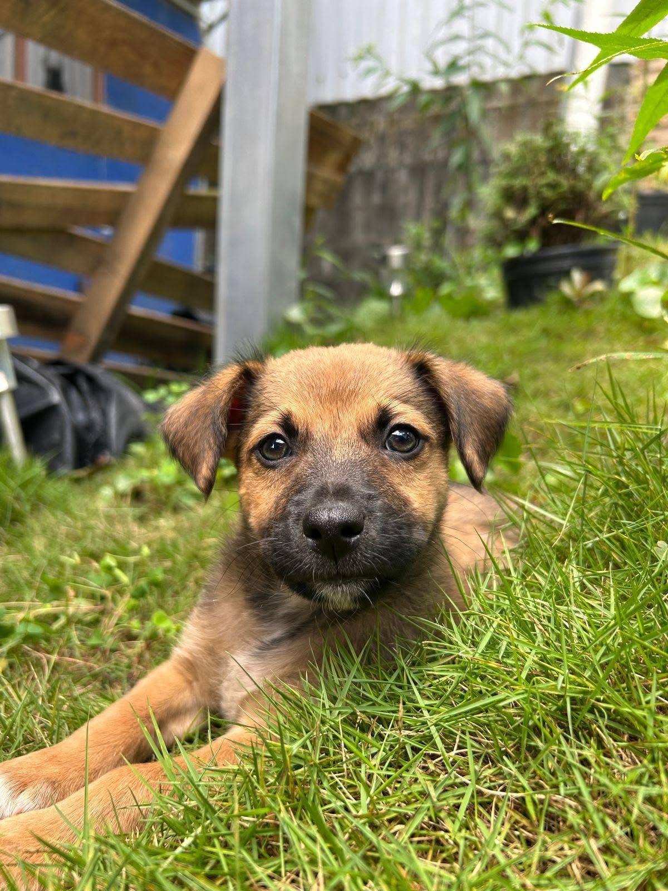
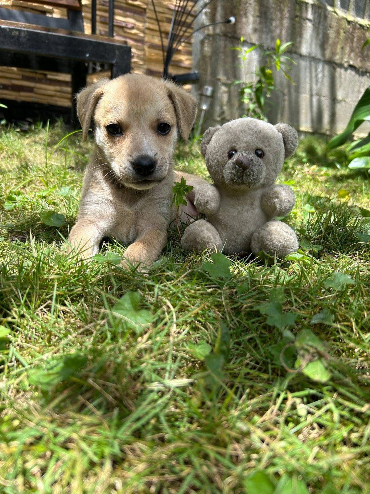

Luna
Perra - 4 meses - Mediana
Cariñosa, sociable y con energía moderada. Ideal para paseos diarios.
Disponible para adopción
Ver perfilRefugio y adopción responsable
Conocé a los perros y gatos que están esperando una familia responsable, amorosa y comprometida con su bienestar futuro.

Filtrá por nombre, especie o tamaño para encontrar el perfil ideal.
Perra - 4 meses - Mediana
Cariñosa, sociable y con energía moderada. Ideal para paseos diarios.
Disponible para adopción
Ver perfil
Gato - 1 año - Pequeño
Tranquilo y curioso. Se adapta bien a apartamentos.
Disponible para adopción
Ver perfil
Perro - 4 años - Grande
Leal y protector. Recomendado para casa con patio y rutina estable.
Disponible para adopción
Ver perfil
Gata - 2 años - Mediana
Dulce, independiente y muy limpia. Le encanta descansar cerca de las personas.
Disponible para adopción
Ver perfil
Perro - 1 año - Pequeño
Juguetón, amigable y perfecto para familias que buscan una mascota alegre.
Disponible para adopción
Ver perfil
Perro - 5 años - Grande
Noble, tranquilo y muy obediente. Disfruta caminatas y espacios abiertos.
Disponible para adopción
Ver perfil
Perro - 2 meses - Pequeña
Curiosa, tierna y muy activa. Le encanta jugar y explorar.
Disponible para adopción
Ver perfil
Perra - 2 meses - Pequeña
Amorosa, obediente y con mucha facilidad para convivir con otras mascotas.
Disponible para adopción
Ver perfil